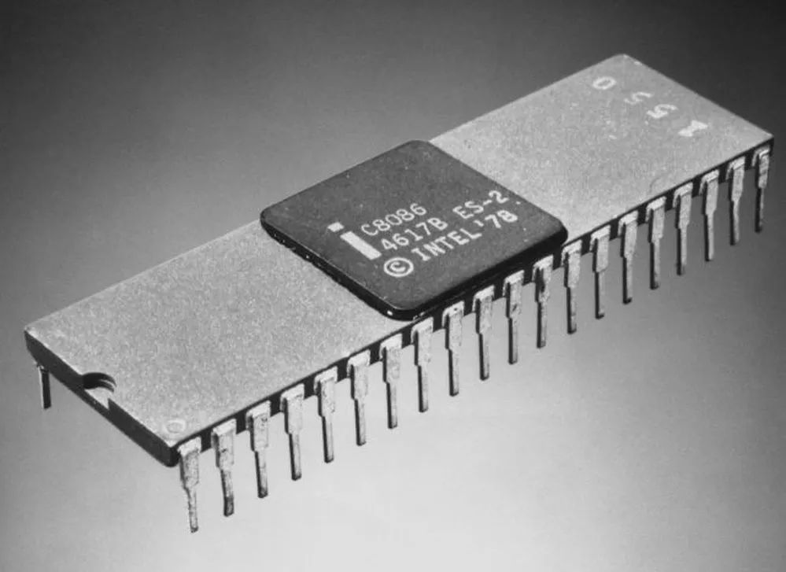

L'évolution
Projet NSI
L'Histoire du Processeurs
L'évolution du Processeurs
Les Acteurs Importants
Portefolio perso.
Mon Github
Mes Codes Perso.
Mes Autres Projets
Mon Générateur de Mot de Passe
Intel 8086
(1978)

Le premier processeur de la famille x86, qui allait devenir l'architecture dominante pour les ordinateurs personnels.